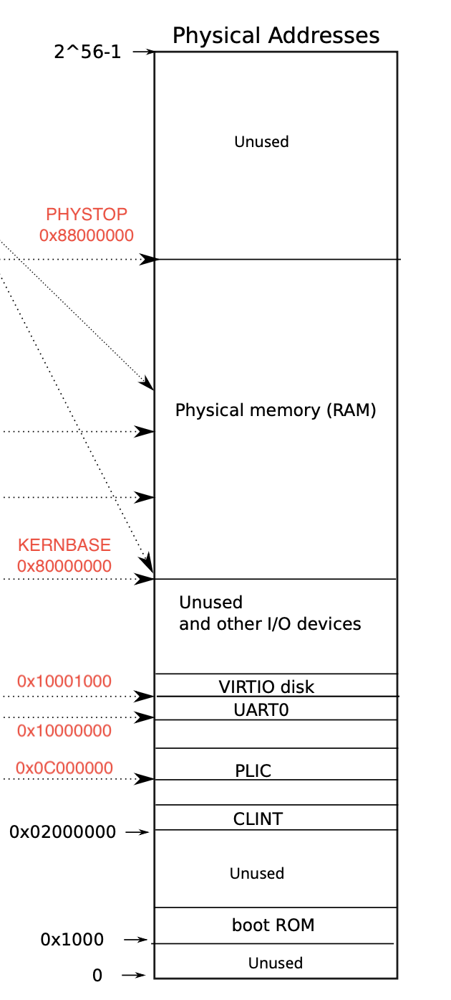

虚拟内存介绍 虚拟内存技术，相信学过计算机专业的人都不陌生。简单来讲，它就是将虚拟地址映射到实际的物理地址。使用虚拟内存有许多好处，例如它能够让每个用户进程都感觉自己拥有整一块物理内存（每个进程实现了隔离）、使用虚拟内存的间接映射可以实现懒分配、写时复制功能等等。
在xv6中，启用了虚拟内存机制，它使用RISC-V的Sv39模式，即使用三级索引，具体转化的细节见下图1所示。从图中可以看到，一个虚拟地址共用到了9+9+9+12=39位（剩余25位没有使用），L2的值用于第一级的索引（可以理解为偏移），L1的值用于第二级的索引，L0的值用于第三级的索引，Offset作为物理地址的最后12位。
图1 RISC-V地址转化细节（图片来源于教材）
继续看图1，有一个非常关键的寄存器satp ，这个寄存器的作用是存储第一级页表的地址，那么根据satp寄存器的值和L2的值，就能找到页表中对应的项（后续用英文PTE来代替项的称呼）。观察到一个页表有512个PTE，一个PTE有64位，每一位的解释可以看图的下方：bit位0～9是权限位Flags，bit位10～53是物理页号PPN。PPN就是一个地址值，前两级的PPN指向下一个页表的位置，最后一级的PPN和Offset拼接在一起形成物理地址。
我们在看PTE中的权限位Flags：V表示是否有效、R表示是否可读、W表示是否可写、X表示是否可执行、U表示用户级进程是否可访问、A表示是否访问过、D表示是否修改过。具体信息可以查阅xv6指令集官方文档。
以上就是地址转化的过程，好消息是这个转化的过程由硬件（配合TLB Translation Look-aside Buffer）完成，不需要我们操心。
继续下面内容以前，我们做一些简单的数学题。虚拟地址理论上可以表示的空间范围有多大？答案是：$2^9 \times 2^9 \times 2^9 \times 2^{12} = 2^{39}B$ 。物理地址的理论范围是$2^{44} \times 2^{12} = 2^{56}B$。我们看到物理地址的Offset是12位，这里需要注意后续分配内存空间都是按一页为单位进行分配的，而一页的大小就是$2^{12}=4096B$。我们看到三个页表，它们都有512个PTE，一个PTE有64位，那么$512*64 \div 8 = 4096B$，所以一个页表也就是一页的大小4096B。
下面的代码块来源于xv6-riscv/kernel/riscv.h，这个头文件里有一些重要的宏定义我们需要知道。
1 2 3 4 5 6 7 8 9 10 11 12 13 14 15 16 17 18 19 20 21 22 23 24 25 26 #define PGSIZE 4096 #define PGSHIFT 12 #define PGROUNDUP(sz) (((sz)+PGSIZE-1) & ~(PGSIZE-1)) #define PGROUNDDOWN(a) (((a)) & ~(PGSIZE-1)) #define PTE_V (1L << 0) #define PTE_R (1L << 1) #define PTE_W (1L << 2) #define PTE_X (1L << 3) #define PTE_U (1L << 4) #define PA2PTE(pa) ((((uint64)pa) >> 12) << 10) #define PTE2PA(pte) (((pte) >> 10) << 12) #define PTE_FLAGS(pte) ((pte) & 0x3FF) #define PXMASK 0x1FF #define PXSHIFT(level) (PGSHIFT+(9*(level))) #define PX(level, va) ((((uint64) (va)) >> PXSHIFT(level)) & PXMASK) #define MAXVA (1L << (9 + 9 + 9 + 12 - 1))
其中code7～11是用于提取PTE的各个权限位。
code4～5是非常有用的宏定义，用于定位到此地址所处页的底部和顶部，例如PGROUNDDOWN(0x0001)=0x0，PGROUNDUP(0x0001)=0x1000，用&和～这两个逻辑运算符实现的代码，非常巧妙！形象的解释可以看下图2所示
图2 PGROUNDUP 和 PGROUNDDOWN
其中code21～23用于提取虚拟地址的三个索引值，例如PX(0, va)获得L0，PX(1, va)获得L1，PX(2, va)获得L2。
code26是最大的虚拟地址，xv6允许的地址范围从$0～2^{38}-1$ ，共$2^{38}B$，和图1中的理论值不一样，可以理解为Offset少了1位，暂时不明确出于什么原因这样设置。
xv6的物理内存分配 我们首先看一下xv6的物理内存是怎么分配的，见下图3所示。

图3 物理内存分布图（来源于教材）
从图3可知，在KERNBASE以前的内存空间都是qemu设置好的。引导程序boot ROM由qemu提供，然后会将内核程序加载到KERNBASE处，随后跳转到KERNBASE处运行内核代码（具体xv6是如何启动的，后续有时间做详细的补偿）。在xv6-riscv/kernel/memlayout.h这个头文件中，宏定义了这些地址。
1 2 3 4 5 6 7 8 9 10 11 12 13 14 15 16 17 18 19 20 21 22 23 24 25 26 27 28 29 30 31 32 33 34 35 36 #define UART0 0x10000000L #define UART0_IRQ 10 #define VIRTIO0 0x10001000 #define VIRTIO0_IRQ 1 #define PLIC 0x0c000000L #define PLIC_PRIORITY (PLIC + 0x0) #define PLIC_PENDING (PLIC + 0x1000) #define PLIC_SENABLE(hart) (PLIC + 0x2080 + (hart)*0x100) #define PLIC_SPRIORITY(hart) (PLIC + 0x201000 + (hart)*0x2000) #define PLIC_SCLAIM(hart) (PLIC + 0x201004 + (hart)*0x2000) #define KERNBASE 0x80000000L #define PHYSTOP (KERNBASE + 128*1024*1024)
我们注意到xv6内核真正使用到的地址是KERNBASE～PHYSTOP这一块。从0x80000000（KERNBASE）地址处开始，有entry.S、kernel text（文本段）、kernel data（数据段），这三块占据了一段内存（end指向它们的结尾），内核真正可分配的内存空间就是end～PHYSTOP这一块，形象的图片见下图4所示
图4 RAM分布图
继续以前，我们在做一下简单的数学题，KERNBASE～PHYSTOP这一块内存空间是$128 \times 1024 \times 1024/2^{20}=128M$ 。所以内核真正使用的RAM就128M，这么小真的能运行吗？？？答案是可以的，因为xv6这个OS比较简单，没有其他复杂的功能，所以完全够用了。后续我们会看到，虚拟地址空间远大于128M，这也是正常的，虚拟地址空间和物理地址空间没有必然联系，相信大家在理解理解什么是虚拟地址就懂了。
xv6的物理地址组织形式和主要的功能函数见图下代码，这部分代码在xv6-riscv/kernel/kalloc.c。
1 2 3 4 5 6 7 8 9 10 11 12 13 14 15 16 17 18 19 20 21 22 23 24 25 26 27 28 29 30 31 32 33 34 35 36 37 38 39 40 41 42 43 44 45 46 47 48 49 50 51 52 53 54 55 56 57 58 59 extern char end[]; struct run { struct run *next ; }; struct { struct spinlock lock ; struct run *freelist ; } kmem; void kinit () { initlock(&kmem.lock, "kmem" ); freerange(end, (void *)PHYSTOP); } void freerange (void *pa_start, void *pa_end) { char *p; p = (char *)PGROUNDUP((uint64)pa_start); for (; p + PGSIZE <= (char *)pa_end; p += PGSIZE) kfree(p); } void kfree (void *pa) { struct run *r ; if (((uint64)pa % PGSIZE) != 0 || (char *)pa < end || (uint64)pa >= PHYSTOP) panic("kfree" ); memset (pa, 1 , PGSIZE); r = (struct run*)pa; acquire(&kmem.lock); r->next = kmem.freelist; kmem.freelist = r; release(&kmem.lock); } void *kalloc (void ) { struct run *r ; acquire(&kmem.lock); r = kmem.freelist; if (r) kmem.freelist = r->next; release(&kmem.lock); if (r) memset ((char *)r, 5 , PGSIZE); return (void *)r; }
首先看一下xv6的内存是用什么数据结构来表示的。就是两个结构体：结构体run和结构体mem来表示空闲内存。结构体kmem中的freelist可以理解为指向第一个空页的指针，然后后续以链表的形式连接在一起（结构体run中的next指向下一个结构体run），组成了空页的一个链表。形象的解释可见下图5所示。
图5 内存组织形式
好！接着是内存的初始化，kinit()会把内存空间end到PHYSTOP按每一页4096B大小进行释放（调用kfree()函数）。
kfree()函数是内存释放函数，它要求输入的物理地址pa必须是一页的起始地址，否则会引发故障。它将pa地址开始的4096B填充入1，然后以链表的头插法将这一块释放的空页插入进kmem的freelist中。
kalloc()函数是内存分配函数，用于得到一页的内存。它从kmem.freelist中取出第一个空闲页，然后返回。
xv6的内存管理 接下来要把内存剩余的故事讲完整！我们需要知道xv6是使用了虚拟内存技术的，xv6分为用户态和内核态，每个用户进程都有自己的页表，内核则单独有一个自己使用的页表。那么我们从内核层面和用户级层面两个维度观察虚拟内存的使用。
内核层面 观察下图6左边部分，我们从下往上看。我们已知，在物理地址的0到KERNBASE这一块内存空间里的东西是qemu设置好的，所以内核页表做直接映射，例如虚拟地址0x0C000000映射到地址0x0C000000。同理，物理地址KERNBASE～end这一块内存空间有内核代码段、内核数据段，所以内核页表对这两页也做直接映射。做直接映射的好处可能是方便内核程序的编写。
图6 内核层面虚拟内存布局（来源于教材）
继续看图6，从上往下看虚拟地址，Trampoline（用于从用户态切换到内核态，暂不细讲）这一页将被映射到物理内存空间的end～PHYSTOP，然后是Guard page和一个内核栈Kstack，一个用户进程有一个属于自己的内核栈。
Guard page启保护作用，用于防止栈溢出。Guard page不分配实际的物理内存，只需要将PTE中的有效位设置为0，那么读写这个地址时就会触发页面错误。这也体现了虚拟内存机制的好处，不用实际分配物理内存就能启到保护作用。
内核栈Kstack则会被映射到物理内存空间的end～PHYSTOP中的某一页。
好！那么我们就看看主要的代码，首先是内核页表的初始化部分，这部分代码在xv6-riscv/kernel/vm.c中。
1 2 3 4 5 6 7 8 9 10 11 12 13 14 15 16 17 18 19 20 21 22 23 24 25 26 27 28 29 30 31 32 33 34 35 36 37 38 39 40 41 42 43 44 45 pagetable_t kernel_pagetable;extern char etext[]; extern char trampoline[]; pagetable_t kvmmake (void ) { pagetable_t kpgtbl; kpgtbl = (pagetable_t ) kalloc(); memset (kpgtbl, 0 , PGSIZE); kvmmap(kpgtbl, UART0, UART0, PGSIZE, PTE_R | PTE_W); kvmmap(kpgtbl, VIRTIO0, VIRTIO0, PGSIZE, PTE_R | PTE_W); kvmmap(kpgtbl, PLIC, PLIC, 0x4000000 , PTE_R | PTE_W); kvmmap(kpgtbl, KERNBASE, KERNBASE, (uint64)etext-KERNBASE, PTE_R | PTE_X); kvmmap(kpgtbl, (uint64)etext, (uint64)etext, PHYSTOP-(uint64)etext, PTE_R | PTE_W); kvmmap(kpgtbl, TRAMPOLINE, (uint64)trampoline, PGSIZE, PTE_R | PTE_X); proc_mapstacks(kpgtbl); return kpgtbl; } void kvmmap (pagetable_t kpgtbl, uint64 va, uint64 pa, uint64 sz, int perm) { if (mappages(kpgtbl, va, sz, pa, perm) != 0 ) panic("kvmmap" ); } void kvminit (void ) { kernel_pagetable = kvmmake(); }
从上面代码段可以看到代码17～30完全都是按照图6的布局进行虚拟内存的初始化映射，代码17～28进行的是直接映射。
代码30：proc_mapstacks()函数在xv6-riscv/kernel/proc.c中，代码见下所示。
1 2 3 4 5 6 7 8 9 10 11 12 13 void proc_mapstacks (pagetable_t kpgtbl) { struct proc *p ; for (p = proc; p < &proc[NPROC]; p++) { char *pa = kalloc(); if (pa == 0 ) panic("kalloc" ); uint64 va = KSTACK((int ) (p - proc)); kvmmap(kpgtbl, va, (uint64)pa, PGSIZE, PTE_R | PTE_W); } }
proc_mapstacks()函数为每个进程的内核栈分配物理空间并做映射。code6做循环，在xv6中，NPROC=64，也就是说进程数量固定为64个，有关进程的内容在讲进程时会详细讲解。在code6～12，在循环中，会分配一页物理内存pa，然后根据进程的编号得到虚拟地址va，最后将va和pa做映射。
大家可以发现，函数里没对Guard page做处理啊！这是对的，不做映射说明这页内存不可访问，也就是启到了Guard page的作用。
至此，内核的虚拟内存部分就讲完了。
用户级层面 用户进程的虚拟内存空间如图7所示，从下往上看依次是代码段、数据段、一页guard page、一页栈stack、堆、trapframe、trampoline。其中trampoline和trapframe是用于从用户态进程切换到内核进程使用的，在后续讲解进程时在详细介绍。
图8 用户进程的虚拟内存布局（来源于教材）
那么，内核是如何为用户进程分配这样的虚拟内存空间呢，我们可以查看exec()系统调用。当调用exec()系统函数时，最终会进入到kexec()这个函数，在xv6-riscv/kernel/exec.c中。
1 2 3 4 5 6 7 8 9 10 11 12 13 14 15 16 17 18 19 20 21 22 23 24 25 26 27 28 29 30 31 32 33 34 35 36 37 38 39 40 41 42 43 44 45 46 47 48 49 50 51 52 53 54 55 56 57 58 59 60 61 62 63 64 65 66 67 68 69 70 71 72 73 74 75 76 77 78 79 80 81 82 83 84 85 86 87 88 89 90 91 92 93 94 95 96 97 98 99 100 101 102 103 104 105 106 107 108 109 110 111 112 113 114 115 116 117 118 119 120 121 122 123 124 125 126 int kexec (char *path, char **argv) { char *s, *last; int i, off; uint64 argc, sz = 0 , sp, ustack[MAXARG], stackbase; struct elfhdr elf ; struct inode *ip ; struct proghdr ph ; pagetable_t pagetable = 0 , oldpagetable; struct proc *p = begin_op(); if ((ip = namei(path)) == 0 ){ end_op(); return -1 ; } ilock(ip); if (readi(ip, 0 , (uint64)&elf, 0 , sizeof (elf)) != sizeof (elf)) goto bad; if (elf.magic != ELF_MAGIC) goto bad; if ((pagetable = proc_pagetable(p)) == 0 ) goto bad; for (i=0 , off=elf.phoff; i<elf.phnum; i++, off+=sizeof (ph)){ if (readi(ip, 0 , (uint64)&ph, off, sizeof (ph)) != sizeof (ph)) goto bad; if (ph.type != ELF_PROG_LOAD) continue ; if (ph.memsz < ph.filesz) goto bad; if (ph.vaddr + ph.memsz < ph.vaddr) goto bad; if (ph.vaddr % PGSIZE != 0 ) goto bad; uint64 sz1; if ((sz1 = uvmalloc(pagetable, sz, ph.vaddr + ph.memsz, flags2perm(ph.flags))) == 0 ) goto bad; sz = sz1; if (loadseg(pagetable, ph.vaddr, ip, ph.off, ph.filesz) < 0 ) goto bad; } iunlockput(ip); end_op(); ip = 0 ; p = myproc(); uint64 oldsz = p->sz; sz = PGROUNDUP(sz); uint64 sz1; if ((sz1 = uvmalloc(pagetable, sz, sz + (USERSTACK+1 )*PGSIZE, PTE_W)) == 0 ) goto bad; sz = sz1; uvmclear(pagetable, sz-(USERSTACK+1 )*PGSIZE); sp = sz; stackbase = sp - USERSTACK*PGSIZE; for (argc = 0 ; argv[argc]; argc++) { if (argc >= MAXARG) goto bad; sp -= strlen (argv[argc]) + 1 ; sp -= sp % 16 ; if (sp < stackbase) goto bad; if (copyout(pagetable, sp, argv[argc], strlen (argv[argc]) + 1 ) < 0 ) goto bad; ustack[argc] = sp; } ustack[argc] = 0 ; sp -= (argc+1 ) * sizeof (uint64); sp -= sp % 16 ; if (sp < stackbase) goto bad; if (copyout(pagetable, sp, (char *)ustack, (argc+1 )*sizeof (uint64)) < 0 ) goto bad; p->trapframe->a1 = sp; for (last=s=path; *s; s++) if (*s == '/' ) last = s+1 ; safestrcpy(p->name, last, sizeof (p->name)); oldpagetable = p->pagetable; p->pagetable = pagetable; p->sz = sz; p->trapframe->epc = elf.entry; p->trapframe->sp = sp; proc_freepagetable(oldpagetable, oldsz); return argc; bad: if (pagetable) proc_freepagetable(pagetable, sz); if (ip){ iunlockput(ip); end_op(); } return -1 ; }
这个代码看起来非常复杂，但我们目前只要抓住其中几个核心的点就行。exec()系统调用的目的是去执行指定的程序，当前进程会将指定的程序的代码段、数据段等加载进来，所以相当于是初始化当前进程的虚拟内存空间。